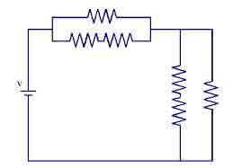

Resistive circuit refers to those circuit which are constructed only with resistive components like resistor. Resistive circuit may be different kinds, some of them are pure resistive, that is built with only resistive components, and some of them are semi resistive, where some capacitive or inductive parts are present. In general, a simple resistive circuit comprises of a set of resistors, a voltage or current source and some connecting wires. If the voltage source is providing DC current, then the circuit termed as DC resistive circuit. And when AC, it is termed as AC resistive circuit. The entire circuit analysis procedure is quite simple for resistive circuit. Because, resistors are linear and bilateral components.
That means? The resistors shows linear voltage versus current characteristics. Or in other words, the rate of current through the resistor is proportional to the applied terminal voltage. And resistor is bilateral element too. That means, current flows through the resistor in either direction, even after polarity change. So, there are several advantages of resistive circuit just because of the simplicity. Generally Ohm's law and node voltage analysis method are the widely used method of analysis of resistive circuits. To determine the current, loop current method and KCL method is used. Pure resistive circuits are the ideal concept, as some portion of resistive circuit comprises of minimum amount of capacitances and inductances. So, the current property changes slightly. Suppose, you have a set of resistors and a voltage source like DC battery. If you connect all those in series with the source, then the circuit will be a resistive circuit.
 by
by {kind=link}